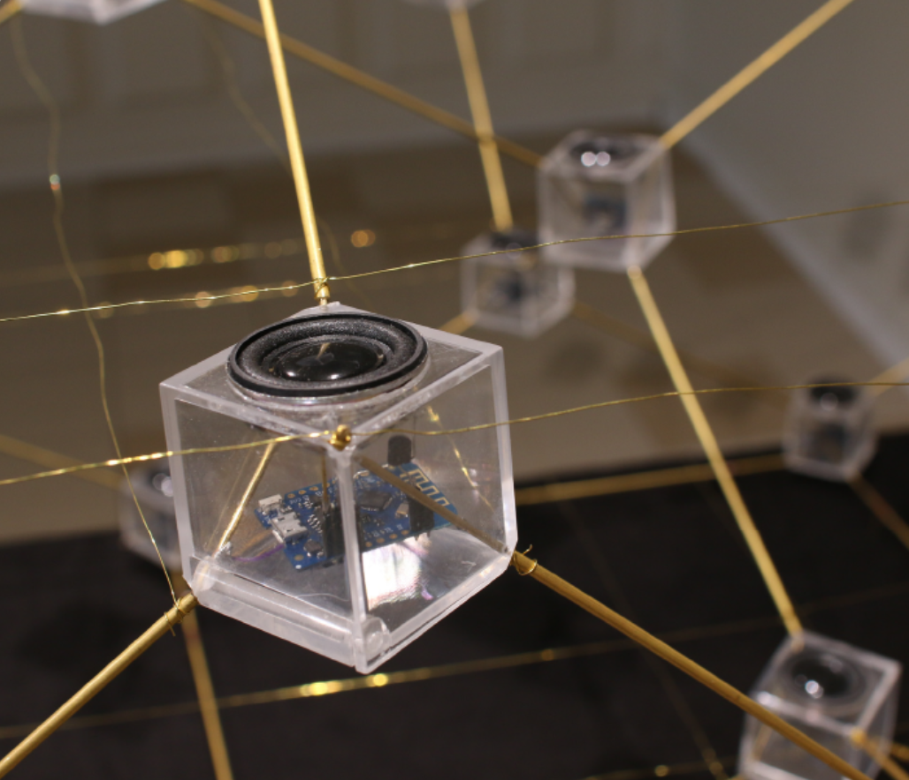
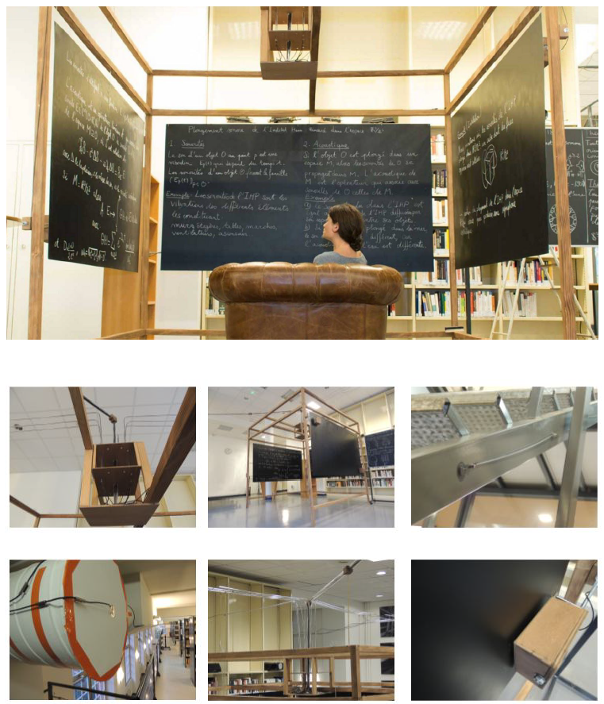
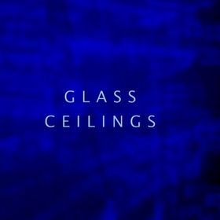

V. MURS INVISIBLES
avec Alice Guerlot-Kourouklis et Aneymone Wilhelm - Collectif Iakeri
Tul, 4 projecteurs, 4 enceintes, 25'
Production Iakeri project / Collectif IAKERI
Creation 2019 en collaboration avec Château Éphémère (France), Stereolux (France), Eastern Bloc (Canada), Abbaye de Maubuisson, centre d'Art Contemporain (France), l'INA-GRM / GRM-Tools (France).

Extract sonore
MURS INVISIBLES est une installation sonore et visuelle qui se propose d'offrir une perception des inégalités femmes-hommes par l'immersion dans un espace où la matière et le son sont révélés, sculptés et distordus par des statistiques.
MURS INVISIBLES aborde les data et les questions qu'elles soulèvent sous un prisme bien particulier : les données utilisées dans l'oeuvre sont en accès libre, mais c'est la réalité qu'elles disent, son ampleur, qui ne sont pas toujours visibles. Il s'agit là de les donner à voir et à entendre dans une installation dont la dramaturgie et la spatialisation sonore et visuelle interroge la volonté du public de savoir.
Rencontre entre l'art plastique et visuel, les mathématiques, l'informatique, la sociologie et la musique expérimentale, elle aborde la problématique selon laquelle le dispositif scénographique peut produire un contexte de saisie de faits sociaux et politiques. Lorsque l'on étudie les statistiques sur les inégalités de genre, les «gender data», en France comme dans le monde entier, c'est avant tout à des écarts que l'on a affaire, bien souvent de grands écarts, et qui sont toujours, presque sans exception, à la défaveur des femmes. C'est sous le prisme de ces écarts défavorables aux femmes, et à partir des données chiffrées de ces derniers, que le Collectif IAKERI a choisi d'aborder les inégalités entre hommes et femmes.
La création trouve son origine dans la volonté de travailler à une traduction sonore d'un fait social par le biais de l'utilisation de données, tout en veillant à la cohérence entre la forme donnée et le sujet abordé. L'installation prend son inspiration formelle dans la réalité sociale même qu'elle entend représenter, par le biais d'un travail de sculpture des matières provoqué par les data, afin de rendre compte de la manière dont ces inégalités viennent elles-mêmes opérer des reliefs, des creux, des formes d'organisation et de pouvoir dans les sociétés.
La dramaturgie, composée de trois partitions (visuelle - sonore - lisible), prend comme fil conducteur une réflexion sur la manière dont le spectateur va se saisir de ces données après en avoir été saisi. Aucune action n'est arbitraire, il n'y a pas d'aléatoire, l'écriture numérique et les outils techniques ne sont là que pour porter un point de vue, celui porté par trois femmes aux parcours distincts, dont la mutualisation et l'échange des savoirs et savoirs-faire ont rendu possible l'émergence de cette oeuvre hybride. Les auteures s'emparent des outils et représentations numériques pour aborder des problématiques politiques..
IV. SINCHRONISATION CHAOTIQUE
avec Vincent Martial et Pierre Berger - Groupe de recherches Esthétopies
Laiton, méthacrylate, microcontroleurs, enceintes
2019

Synchronisation chaotique est une œuvre sonore et visuelle qui propose d'explorer de façon sensible des espaces mathématiques imaginaires, où notre perception naturelle est modifiée, où les sons se propagent et circulent éternellement. Nous proposons de voir et d'entendre cette recherche à la fois scientifique et sensible.
Une équation dite « aux dérivées partielles » (EDP) est un système continu évoluant dans le temps, dans lequel l'état de chaque point dépend de son état et de celui de ses voisins immédiats dans l'instant présent. Synchronisation chaotique est une oeuvre évolutive qui se prête à l'exploration et la compréhension, de systèmes régis par des EDP simulant des phénomènes de la nature. Le dispositif permet de ressentir de façon sonore et visuelle des phénomènes tels que la propagation des ondes dans un espace, la relation entre la géométrie de l'espace et une telle dynamique.
Synchronisation chaotique se présente sous la forme d'une oeuvre sculpturale dans laquelle des noeuds, représentés par de petits modules en mouvements sont répartis dans l'espace sur une surface géométrique dont chaque point est relié de manière tétraédrique. Le dispositif permet une forme particulaire d'écriture sonore à partir du mouvement sonore. Ce sont les propagations engendrées au sein de la structure qui développent un espace acoustique singulier.
III. IMMERSION DE L'INSTITUT IHP DANS L'ESPACE R3/Z3
avec Vincent Martial et Pierre Berger - Groupe de recherches Esthétopies
60 microphones de contact, transducteurs, tableaux
2017

Article dane le journal espagnol El País
Enregistrement sonore
Immersion est une installation in-situ que permet de réaliser un plongement de l'Institut Henri Poincaré (IHP) à Paris dans l'espace mathématique R3/Z3. Pour ce faire pas moins de 60 micros contacts sont posés dans escaliers, aérations, ascenseurs ou autres, pour capter les vibrations de l'institut. Ces sonorités sont ensuite traitées mathématiquement et informatiquement pour simuler le son que l'on entendrait si tout le bâtiment était plongé dans cet espace de l'imaginaire mathématique R3/Z3. Enfin, le son est diffusé via des transducteurs pour faire vibrer des tableaux et produire le son imaginé.
II. CONVERSATIONS DANS PLUSIEURS ESPACES
avec Sergio Krakowski et Pierre Berger - Groupe de recherches Esthétopies
Microphone omnidireccional, écouteurs, acier imprimé
2016 - 2017

À tout espace (même abstrait) est associé des harmoniques de résonance, qui, si on arrive à les calculer, permettent de simuler son acoustique. Conversations est une installation sonore interactive composée d'un micro omnidirectionnel qui capte les paroles des participants. Chacun d'entre eux entend le son restitué via des écouteurs qui diffusent la réverbération du son dans l'espace choisi. Ce dispositif crée une expérience ludique basée sur des mathématique fondamentales, essayant ainsi de réveiller la curiosité du public sur la relation entre son et géometrie.
I. GLASS CEILINGS
avec Alice Guerlot-Kourouklis et Aneymone Wilhelm - Collectif Iakeri
Tul, 3 projecteurs, 2 enceintes, controleurs midi
2016 - 2017
Glass Ceilings est une instalation interactive, commandée par le Festival Nanterre Digital 2017 sur le thème "Women in numérique".
Extract sonore
video